2025-06-01
13:24 Попробовал симуляцию в EasyEDA (https://easyeda.com/)
К сожалению весь обсчет идет online
Во первых, часто у меня нет ответа от сервера Во вторых - можно уткнуться в лимит
#electronics #simulation #cad
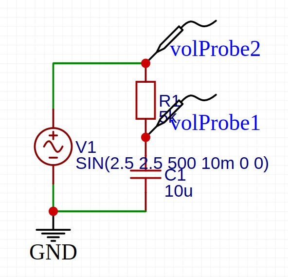
13:24
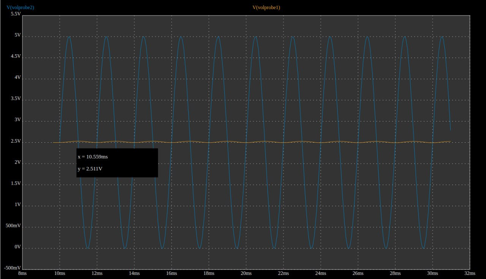
13:46
А вот так ведет себя LC фильтр с частотой отсечки в 500 и 50 Гц
#electronics
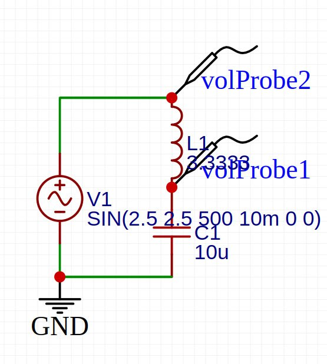
13:46
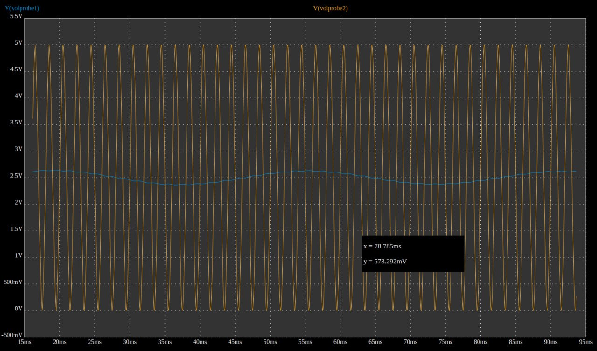
13:46
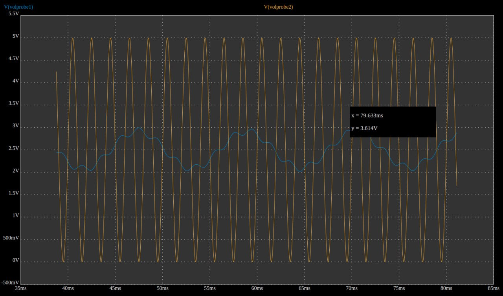
16:59
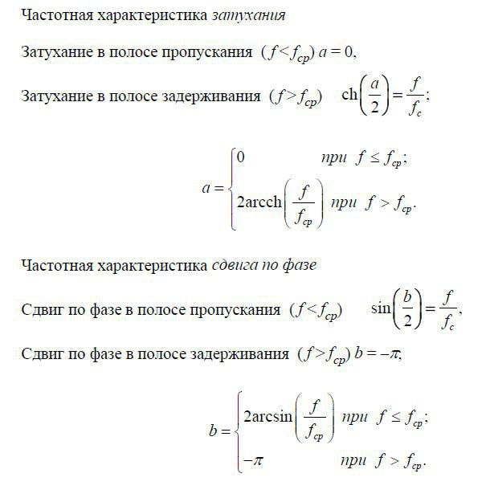
17:38
Попробовал запустить симуляцию для Т-фильтра (LCL). Без нагрузки разницы
нет, что в принципе логично.
Добавил нагрузку 100 Ом - тогда разница на лицо
#electronics #simulation
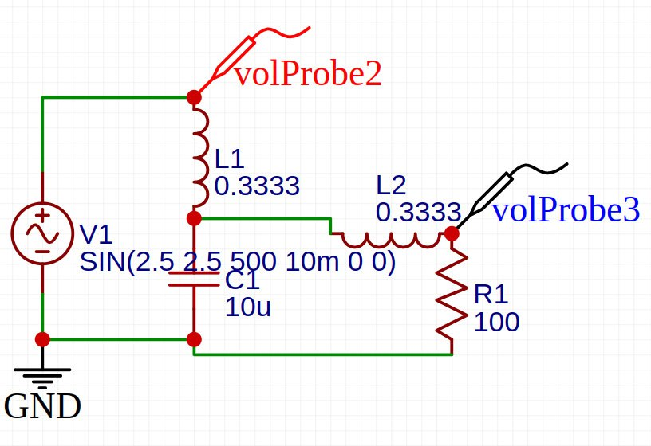
17:38
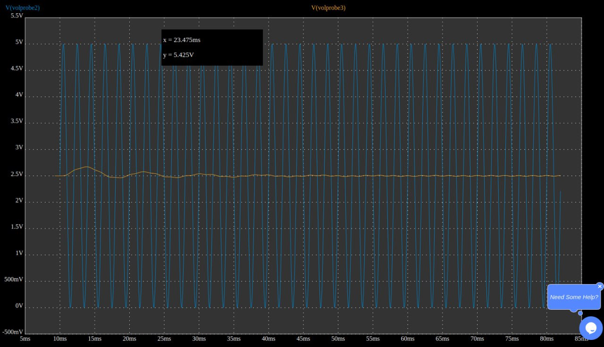
17:38
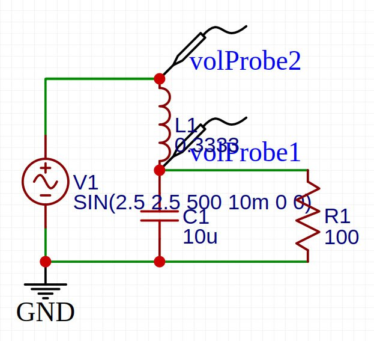
17:38
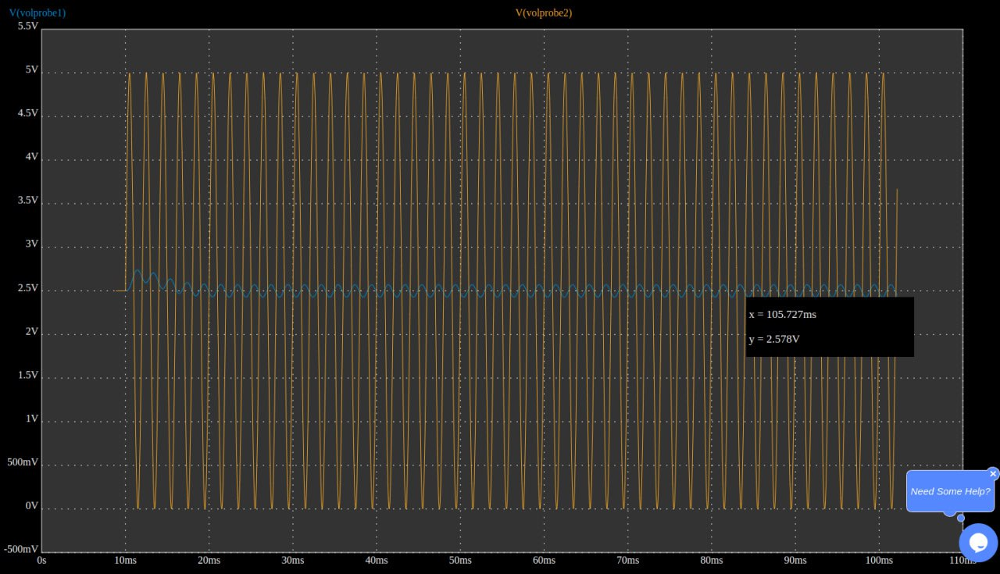
18:18
Как мне сейчас кажется, часть Т фильтра в красном кружке (L2 + R1) - это
просто второй Г фильтр.
Т.е. мы просто используем часть схемы вне фильтра как часть фильтра.
Соответственно П фильтр - это также просто два Г фильтра, но чтобы он давал какие-то преимущества нужно чтобы между L1 и V1 существовало какое-то сопротивление. Например внутреннее сопротивление источника питания.
#electronics
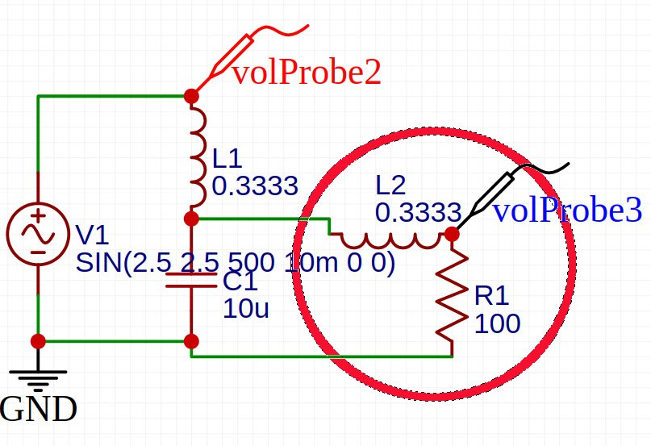
18:18
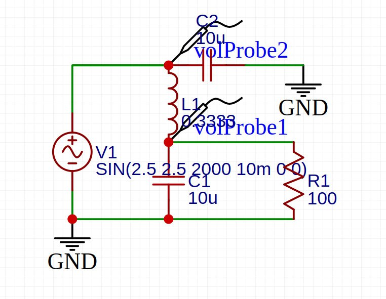
22:19
22:19
12:10
Затухание для RC фильтра и LC фильтра С одинаковым сопротивлением на 500
Hz
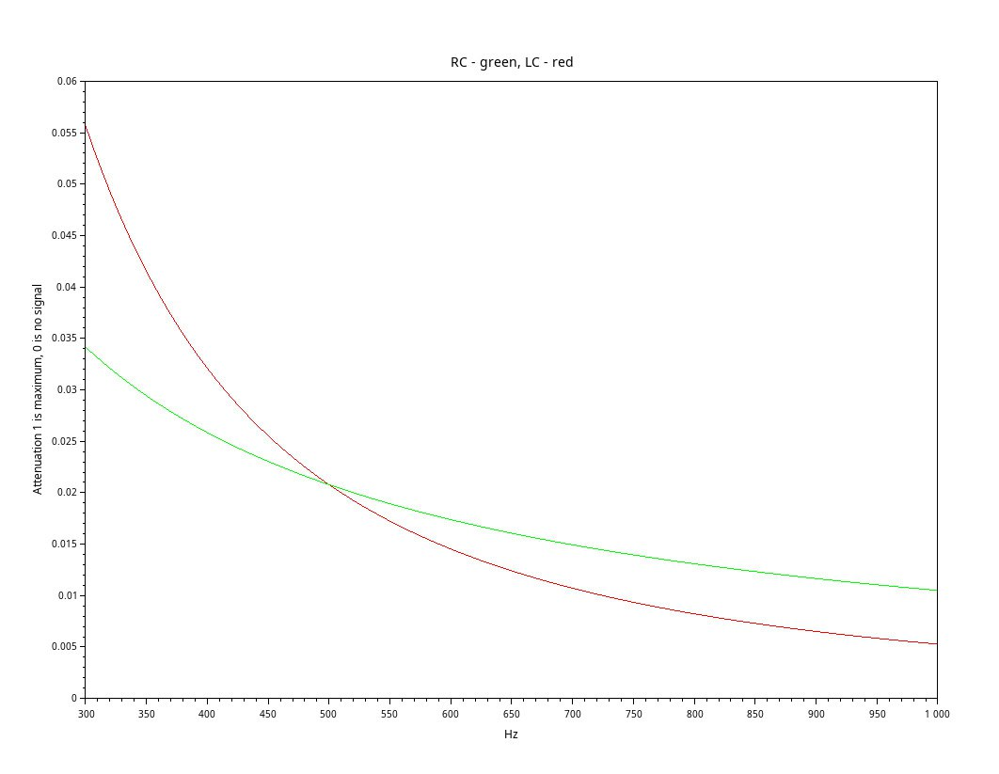
12:12
То же самое от 0
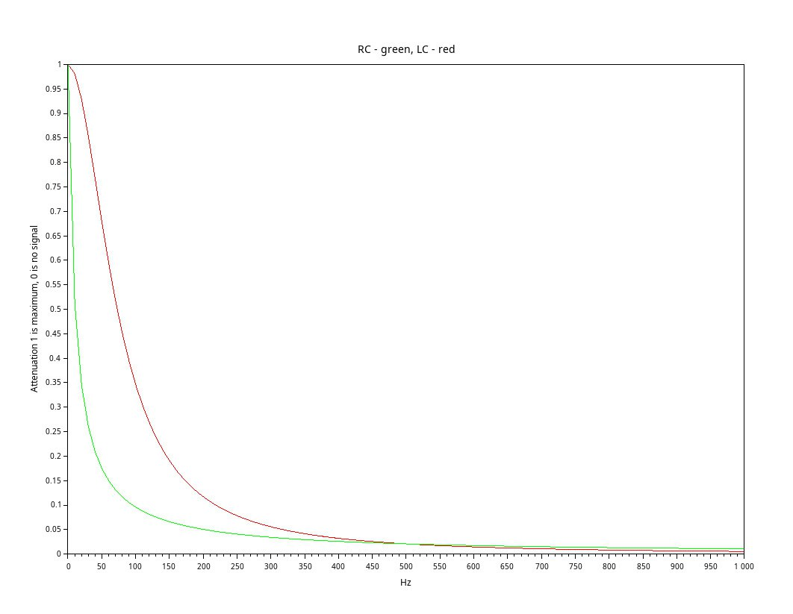